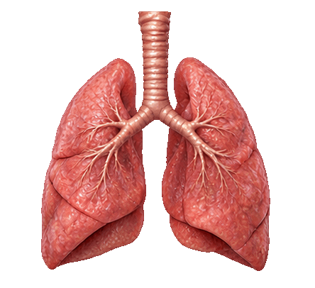

Conscientizar
Apresentar informações claras e confiáveis sobre cigarros eletrônicos, nicotina, dependência e possíveis riscos à saúde.
O VivaLivre é um espaço educativo para conscientizar sobre os cigarros eletrônicos, enfrentar a desinformação e oferecer apoio para escolhas mais saudáveis — sem deixar de incentivar os estudos, a aprendizagem e os projetos de futuro.
Desenvolvido como Trabalho de Conclusão de Curso no IP Santa Luzia do Paruá, o VivaLivre é um espaço educativo voltado à conscientização sobre o uso de cigarros eletrônicos entre estudantes do Ensino Médio. O projeto reúne informações confiáveis, orientações para buscar apoio e ferramentas que incentivam a organização, a aprendizagem e o desenvolvimento acadêmico.
Apresentar informações claras e confiáveis sobre cigarros eletrônicos, nicotina, dependência e possíveis riscos à saúde.
Ajudar estudantes a lidar com a pressão dos colegas e conhecer caminhos de apoio, sem julgamentos ou exposição.
Oferecer recursos simples para organizar tarefas, desenvolver hábitos de estudo e manter o foco nos objetivos acadêmicos.
Trabalho de Conclusão de Curso · 2º semestre de 2026
Escolha o que faz sentido para você agora. Você pode voltar e explorar tudo depois.
Entenda o que pode estar no aerossol e como a nicotina afeta o corpo.
↗ 02 / MUDAROrganize seu começo, acompanhe seus dias e celebre cada avanço.
↗ 03 / CONVERSAREncontre caminhos para conversar, pedir ajuda e apoiar alguém.
↗Toque em cada pergunta para descobrir o que dizem as fontes de saúde. Informação confiável ajuda a fazer escolhas conscientes.
Verdade: o aerossol pode conter nicotina, partículas muito pequenas, metais e outras substâncias químicas. Não é apenas vapor de água.
Sim. Os líquidos podem conter nicotina ou não. A nicotina causa dependência, e não é possível confiar apenas no sabor ou na aparência para saber a composição.
O aroma não torna o produto seguro. Alguns aromatizantes e outras substâncias podem oferecer riscos quando aquecidos e inalados.
A Anvisa informa que nenhum cigarro eletrônico é aprovado como tratamento para parar de fumar. Para receber orientação, procure uma UBS ou ligue 136.
Sim. A nicotina é uma substância que pode causar dependência. Se você está preocupado com seu uso, merece acolhimento e orientação profissional, sem julgamento.
O aerossol liberado no ambiente pode conter substâncias que afetam outras pessoas. Evitar a exposição também é uma forma de cuidado coletivo.
Conteúdo educativo baseado em informações da Anvisa e do Instituto Nacional de Câncer (INCA). Consulte as fontes no final da página.
O aerossol do cigarro eletrônico não é apenas vapor de água. Dependendo do produto, pode conter nicotina, partículas muito pequenas, metais e outras substâncias químicas.
Acompanhe a sequência visual: primeiro a anatomia saudável, depois uma representação ilustrativa de possíveis efeitos da exposição repetida. Não é uma previsão individual nem mostra a condição real de quem usa.

VIAS RESPIRATÓRIASPULMÕESAvance pela sequência para entender os riscos associados à exposição. A aparência é conceitual: os efeitos variam e não acontecem em etapas iguais para todo mundo.
Não começar é a forma mais segura de evitar a exposição. Se você nunca usou, sua escolha já é uma forma de cuidado.
Vídeos e materiais de instituições públicas para aprender, refletir e compartilhar informação segura.
Os vídeos são conteúdos externos publicados por canais institucionais. Se a reprodução incorporada não funcionar, use o link “Assistir no YouTube”.
Uma trilha de desafios rápidos. Responda, descubra algo novo e desbloqueie a próxima etapa. Sem ranking, sem pressão — só conhecimento que fica com você.
Escolha a alternativa mais correta:
O XP e as medalhas são simbólicos. O progresso fica salvo somente neste navegador e não representa avaliação de saúde ou conhecimento escolar.
Sem questionário longo. Escolha uma opção e receba uma ideia simples para o seu momento. Você não precisa contar nada pessoal.
Escolha o que combina com seu momento. Sem pontos, sem nota e sem cobrança.
Registre os dias em que você ficou sem usar. Sua sequência cresce a cada confirmação diária. Se acontecer uma recaída, isso não apaga seu esforço: você pode recomeçar sem culpa.
Todo começo conta. Registre seu primeiro dia.
Um cantinho rápido para organizar tarefas e começar a estudar sem complicação — aberto a todo estudante.
Escolha uma tarefa pequena e dê o primeiro passo. Não precisa resolver tudo agora.
Deixe o celular de lado, se puder, e comece pelo primeiro item.
Suas tarefas ficam salvas somente neste navegador. Este espaço é uma ferramenta de organização; dificuldades de concentração podem ter várias causas e não devem ser atribuídas automaticamente ao vape.
Você pode organizar um relato objetivo para compartilhar com a gestão escolar pelos canais oficiais. A ideia é cuidar do ambiente, não expor ou constranger estudantes.
Seu relato foi organizado. Revise e compartilhe somente com a gestão escolar por um canal oficial.
Importante: não informe nomes, turma, fotos ou dados pessoais de estudantes. Não confronte ninguém nem divulgue o ocorrido em grupos. O VivaLivre não recebe nem transmite denúncias; o texto é gerado apenas no seu dispositivo. Em caso de risco imediato, procure um adulto responsável ou a equipe gestora.
Se você usa cigarro eletrônico, está preocupado com isso ou quer mudar esse hábito, não precisa resolver tudo sozinho. Converse com um adulto de confiança e procure uma Unidade Básica de Saúde (UBS). A equipe pode orientar você com respeito e sem julgamentos.
Um familiar, responsável, professor ou profissional da escola pode ajudar você a dar o primeiro passo.
Conte que deseja orientação sobre o uso de vape. A equipe pode acolher você e explicar as opções de cuidado.
Não precisa resolver tudo sozinho. Se houver dificuldade, volte a conversar com a equipe de saúde e com sua rede de apoio.
O conteúdo do VivaLivre é educativo e foi organizado a partir de materiais de órgãos públicos de saúde.